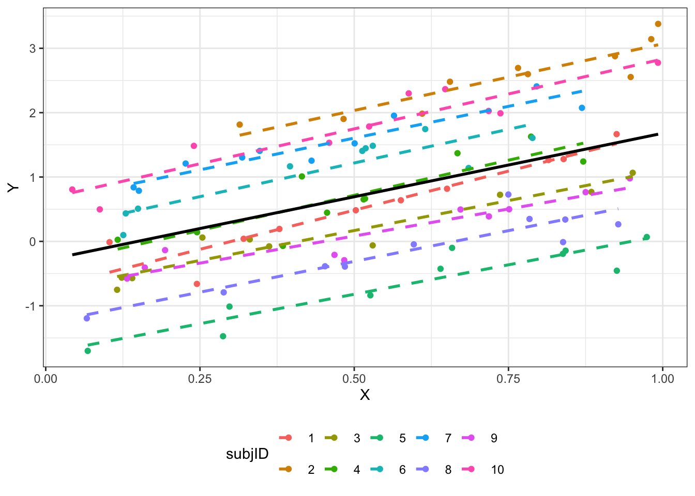

11 L12 // Линейные модели со смешанными эффектами
11.1 Ограничения изученных ранее линейных моделей
При построении обычных линейных моделей мы предполагаем, что наши наблюдения независимы. Однако зачастую это требование не выполняется в полной мере, и наши данные имеют некоторую группировку (clustered data), которую, возможно, мы даже не планировали.
Примеры возможных группировок:
- измерения в разные периоды времени (разные партии химических реактивов, разные настройки аппаратуры)
- измерения в разных участках пространства (мониторы компьютеров могут различаться)
- повторные измерения (испытуемые / респонденты различаются между собой)
- измерения на разных группах испытуемых / респондентов (школьники разных классов в одной параллели могут различаться)
Возникают внутригрупповые корреляции (intraclass correlations) — наблюдения из одной группы более похожи друг на друга, чем наблюдениях из разных групп.
- Подобную структуру данных некорректно игнорировать — увеличивается вероятность ошибиться с выводами.
- Интуитивное решение: включить группирующие факторы в модель в качестве предикторов — технически так, безусловно, сделать можно, однако такой подход,
- во-первых, значительно усложняет модель (чрезмерно увеличивается количество параметров),
- а во-вторых, ограничивает широту обобщения результатов (интерпретировать параметры модели можно только для конкретных испытуемых / респондентов / учебных классов).
Чтобы решить возникающие трудности, необходимо ввести в модель случайные факторы.
11.2 Случайные vs фиксированные факторы
До сих пор мы работали только с фиксированными факторами — моделировали среднее значение для каждого уровня фактора.
Если групп возникает много, то и моделируемых средных значений также много. Кроме того, когда мы задавали фиксированные факторы, мы считали, что сравниваемые группы фиксированные, и нас интересуют сравнения именно между ними.
Однако когда группировка возникает не как результат дизайна исследования, а как некоторый побочный результат (то есть, мы не планировали изучать фактор, по которому разделилась наша выборка), нам не важны конкретные значения интерсептов в каждой из групп. Мы можем представить данный фактор как случайную величину (величину «поправки»), и оценить дисперсию между уровнями группирующего фактора. Это и есть случайные факторы.

| Свойства | Фиксированные факторы | Случайные факторы |
|---|---|---|
| Уровни фактора | Фиксированные, заранее определенные, потенциально воспроизводимые | Случайная выборка из всех возмоных уровней |
| Используются для тестирвоания гипотез | О средних значения ЗП на раных уровнях фактора \(H_0:\mu_1 = \mu_2 = \dots = \mu\) | О дисперсии ЗП между уровнями фактора \(H_0:\sigma_r^2 = 0\) |
| Выводы можно экстраполировать | Только на уровни анализа | На все возможные уровни |
На один и тот же фактор можно смотреть и как на случайный, и как на фиксированный в зависимости от задач исследователя. Так как мы хотим моделировать дисперсию, считается, что у случайного фактора должно быть минимум пять градаций.
11.3 Виды GLMM и их математическая формулировка
Мы строим прямые — модели же линейные. А прямая задается двумя параметрами — интерсептом и углом наклона (slope). Эти параметры мы оцениваем в качестве фиксированных факторов. Но так как других у нас нет, то эти же параметры оцениваются и как случайные факторы. То есть, случайные факторы как бы дополняют фиксированные.
- Модель со случайным интерсептом
\[ \begin{split} y_{ij} &= \beta_0 + \beta_1 x_{ij} + \eta_i + \varepsilon_{ij} \\ \eta_i &\thicksim \mathcal{N}(0, \sigma^2_\eta) \\ \varepsilon_i &\thicksim \mathcal{N}(0, \sigma^2) \end{split} \]
\(i\) — наблюдение (респондент), \(j\) — уровни (значения) предиктора.
- Модель со случайным интерсептом и углом наклона
\[ \begin{split} y_{ij} &= \beta_0 + \beta_1 x_{ij} + \eta_{0i} + \eta_{1ij} x_{ij} + \varepsilon_{ij} \\ \eta_{0i} &\thicksim \mathcal{N}(0, \sigma^2_{\eta_0}) \\ \eta_{1ij} &\thicksim \mathcal{N}(0, \sigma^2_{\eta_1}) \\ \varepsilon_{ij} &\thicksim \mathcal{N}(0, \sigma^2) \end{split} \]
\(i\) — наблюдение (респондент), \(j\) — уровни (значения) предиктора.
11.4 Методы подбора параметров в смешанных моделях
Параметры в смешанных моделях могут подбираться двумя методами. Первый из них — метод максимального правдоподобия (maximum likelihood, ML).
Однако когда мы пытаемся оценить дисперсию методом максимального правдоподобия, оценки получаются смещенными. Это происходит потому, что сразу приходится оценивать и \(\beta\), и дисперсии.
Этого можно избежать, применяя метод ограниченного максимального правдоподобия (restricted maximum likelihood, REML). Данный метод позволяет с помощью математических преобразований занулить \(\beta\) и получить несмещенные оценки дисперсий.
REML-оценки \(\beta\) стремятся к ML-оценкам при увеличении объема выборки.
Так что же использовать, REML или ML?
- Если нужны точные оценки фиксированных эффектов — ML.
- Если нужны точные оценки случайных эффектов — REML.
- Если нужно работать с правдоподобиями — следите, чтобы в моделях, подобранных REML была одинаковая фиксированная часть.
- Для обобщенных негауссовских смешанных линейных моделей REML не определен — там используется ML.
11.5 Диагностика модели
11.5.1 Индуцированные корреляции
Появление в модели случайного фактора позволяет учесть взаимосвязь наблюдений для каждого из респондентов — «индуцированные» корреляции.
Посмотрим внимательно на случайную часть модели.
Случайные эффекты, распределенные нормально со средним \(0\) и некоторой дисперсией \(\sigma^2_\eta\)
\[ \eta \thicksim \mathcal{N}(0, \sigma^2_\eta) \]
Остатки модели, независимые распределенные нормально со средним 0 и некоторой дисперсией
\[ \varepsilon \overset{\text{i.i.d}}{\thicksim} \mathcal{N}(0, \sigma^2) \]
Путем математических преобразований матриц ковариаций можно получить, что корреляция между наблюдениями одного субъекта равна следующему выражению.
\[ \text{ICC} = \frac{\sigma^2_\eta}{\sigma^2_\eta + \sigma^2} \]
Эта характеристика называется коэффициент внутриклассовой корреляции (intra-class correlation, ICC).
Таким образом, ICC — это способ измерить, насколько коррелируют друг с другом наблюдения из одной и той же группы, заданной случайным фактором. Значения ICC интерпретируются аналогично коэффициенту корреляции.
Если ICC низкий, то наблюдения очень разные внутри каждой из групп. Значит, чтобы надежно оценить эффект этого случайного фактора, нужно брать больше наблюдений в группе.
Если ICC высокий, то наблюдения очень похожи внутри каждой из групп, заданных случайным фактором. Значит, можно брать меньше наблюдений в группе.
Это можно использовать при определении объема выборки (при анализе пилотных данных).
11.5.2 Pseudo-\(R^2\)
Для смешанных моделей существует аналог коэффициента детерминации, только теперь их два:
- Marginal \(R^2\) — доля дисперсии, объясненной фиксированными факторами
- Conditional \(R^2\) — доля дисперсии, объясненной моделью в целом (и фиксированными, и случайными факторами)
11.5.3 Анализ остатков модели
Остается ряд допущений, классических для линейных моделей:
- линейность связи
- распределение остатков
- (не)зависимость остатков от предсказанных значений
Но так как в модели теперь есть и случайные факторы, мы можем изучать зависимость остатков от случайных факторов.
11.6 Тестирование гипотез
С помощью смешанных моделей можно тестировать статистические гипотезы. Но есть проблема: тесты, применяемые для GLM (t- и z-тесты Вальда, LRT) дают приблизительные оценки. Для отбора моделей используют информационные критерии (AIC).
11.6.1 t-тесты Вальда
\[ \begin{split} &H_0: \beta_k = 0 \\ &H_1: \beta_k \neq 0 \\ t &= \frac{b_k - \beta_k}{\text{se}_{b_k}} = \frac{b_k}{\text{se}_{b_k}} \thicksim t(n-p) \end{split} \]
- Так как эти тесты дают лишь приблизительные оценки, их значения не приводятся в аутпутах функций.
- Их можно вернуть, однако при интерпретации получаемых результатов всегда нужно помнить, что это только приблизительные оценки.
11.6.2 Тесты отношения правдоподобий
\[ \text{LRT} = 2 \ln \Big( \frac{L_{\text{M}_1}}{L_{\text{M}_2}} \Big ) = 2 (\ln L_{\text{M}_1} - L_{\text{M}_2}) \]
LRT для случайных эффектов
- Требуются модели с одинаковой фиксированной частью, подобранные REML
- Уровни значимости будут завышены
- Обычно тесты не делают, а набор случайных эффектов определяется структурой данных
LRT для фиксированных эффектов
- Требуются модели с одинаковой случайной частью, подобранные ML
- Уровни значимости будут занижены
11.7 Сравнение моделей
Для сравнения моделей актуальны ранее изученные варианты:
- тесты отношения правдоподобий
- информационные критерии (AIC, BIC)
11.8 Модели для других распределений
Совместив идеи GLM и mixed models можно получить модели для бинарных переменных.
- В основе анализа стоит подбор параметров логистической регрессионной модели
- Параметры логистической регрессии подбираются методом максимального правдоподобия
- Угловые коэффициенты логистической регрессии позволяют сказать, во сколько раз изменяется соотношение шансов для события при увеличении предиктора на единицу (или при переходе от базового уровня фактора к данному уровню)
- Для визуализации результатов лучше проводить обратное логит-преобразование и отражать зависимую переменную в терминах вероятностей
- Группирующие факторы могут определять дисперсию свободного члена модели или дисперсию углового коэффициента и свободного члена модели
- Внутриклассовые корреляции могут быть вычислены лишь приблизительно, но их рассмотрение дает важную информацию. Если ICC равен нулю, то лучше отказаться от рассмотрения случайных факторов и применить обычную GLM.
Аналогично можно получить смешанные модели для счетных переменных.